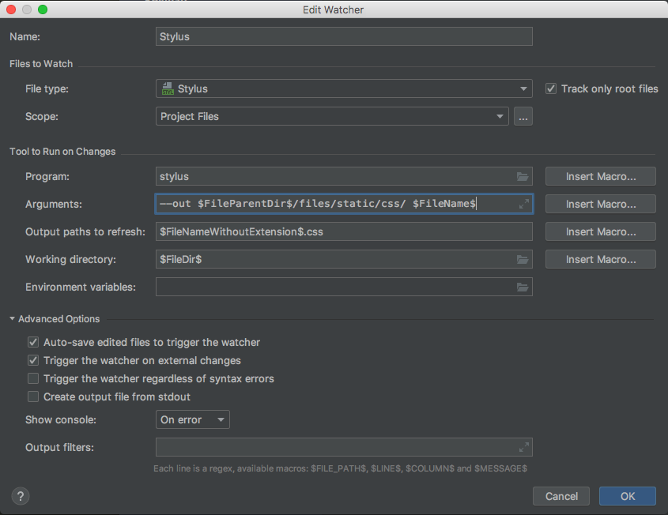

PyCharm の File Watcher で、 Stylus の CSS ファイル生成先ディレクトリを指定する。
リファレンス
手順
-
PyCharm -> Preferences -> Tools -> File Watchers -> Stylus -> 編集ボタン (えんぴつみたいなマーク) 押下
-
Edit Watcher ダイアログで、
-
Arguments: --out $FileParentDir$/files/static/css/ $FileName$
- Insert Macro... ボタンを押下すると、指定できるマクロのプレビューが見られるので、好きなものを選ぶと良い。
- --out $FileParentDir$/files/static/css/ の指定は、 Stylus の Options 指定形式に従うこと。
- $FileName$ は、どうも PyCharm の File Watcher 側で必要らしく、指定しないと動かなくなるので、削除しないこと。
-